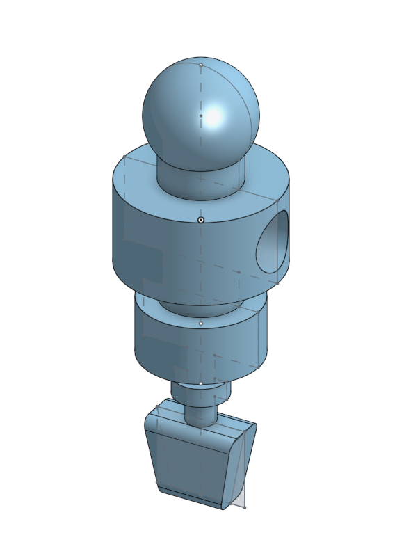
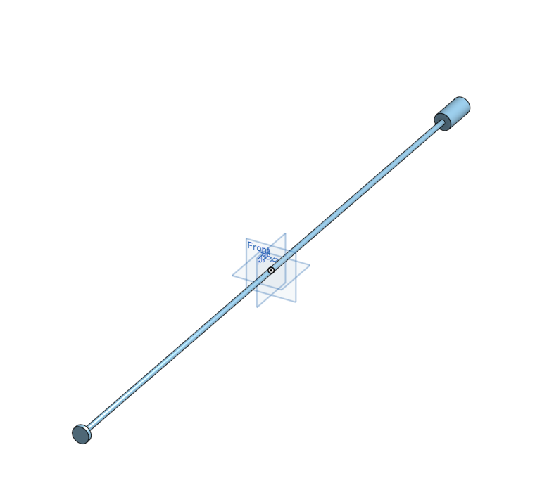
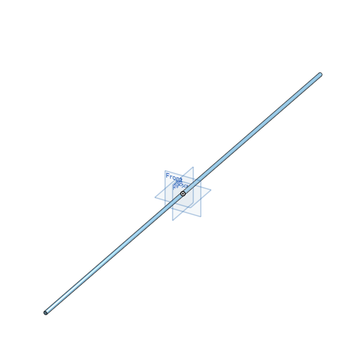
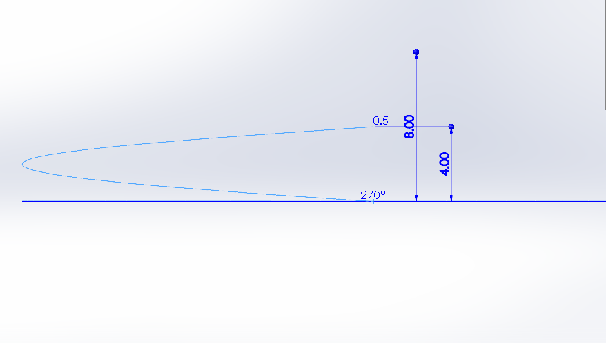
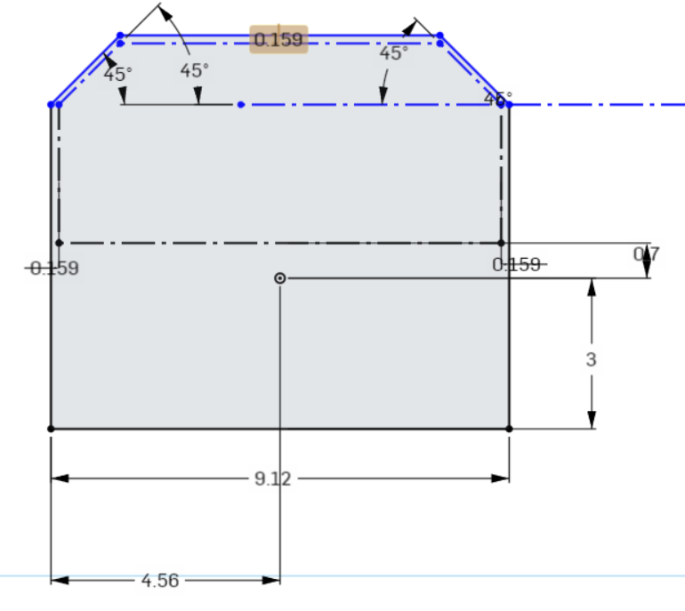
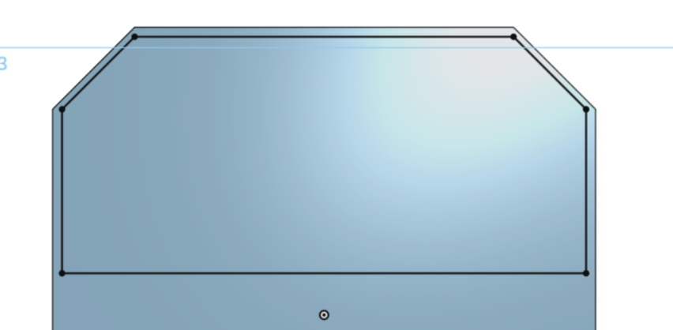
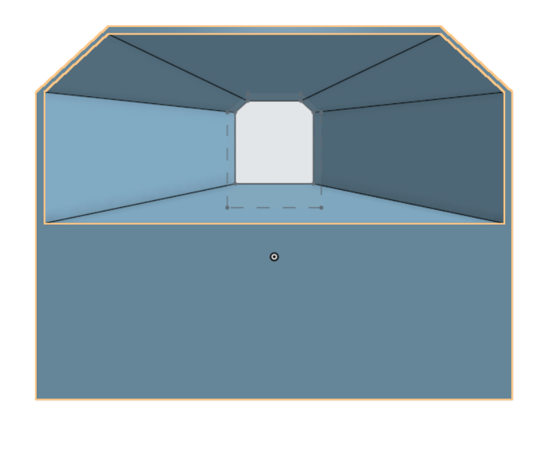

零件尺寸分析
手足球系統的零組件尺寸分析 (可行性分析)
1.手足球場地 (長:57.4in 寬:30in 總高:10.7in)

原先球門牆壁厚度為0.7in


後來在模擬時發現球門前的球員動作距離有限,球容易卡在死角,最後決定將球門牆壁加厚
球門尺寸


球員總高4.3in以及跟竿子結合的洞 (直徑)為0.562in

竿子直徑為0.562in
原本的竿子有給限制頭尾，但後來發現在模擬時會有一些小問題，所以決定去除


〈軌道詳細設計〉
設計初步草圖

寬度設計1.5因需比球體半徑大一些

螺旋線高度為4，為緩衝設計加大

中間段使用掃略出圖形
完成軌道及線架構

軌道最終版
由於我們的擊球系統過於強大，會讓球從舊版軌道直接飛出去，所以才把軌道上面封起來，變成最終版

〈集球門〉第三版
初步草圖 進球口

出球口


使用疊成拉伸把外圍先做出來，原本是想說看可不可以直接把孔一起用好，但Onshape似乎沒辦法做到，只好把孔另外再做出來


疊成拉伸

期末實習任務 << Previous Next >> 細部設計與BOM